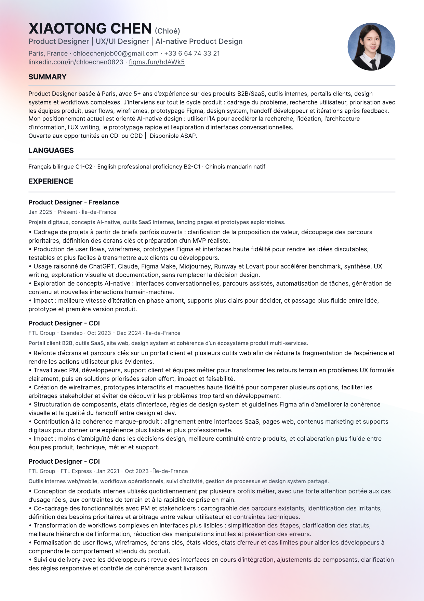

Systems
Flows, states, components and content structures that make complexity manageable.
About · working file
I connect product logic, visual direction and interactive prototyping. Open the folder to browse my CV and the fragments behind the case studies.

Open full CVHow I work
I enjoy the moment when a vague business need becomes a product decision: mapping what matters, making trade-offs visible and building enough of the experience to learn from it.
Flows, states, components and content structures that make complexity manageable.
Clear narratives that connect user evidence, decisions and outcomes.
Clickable and coded experiences that help teams see, test and improve the idea.